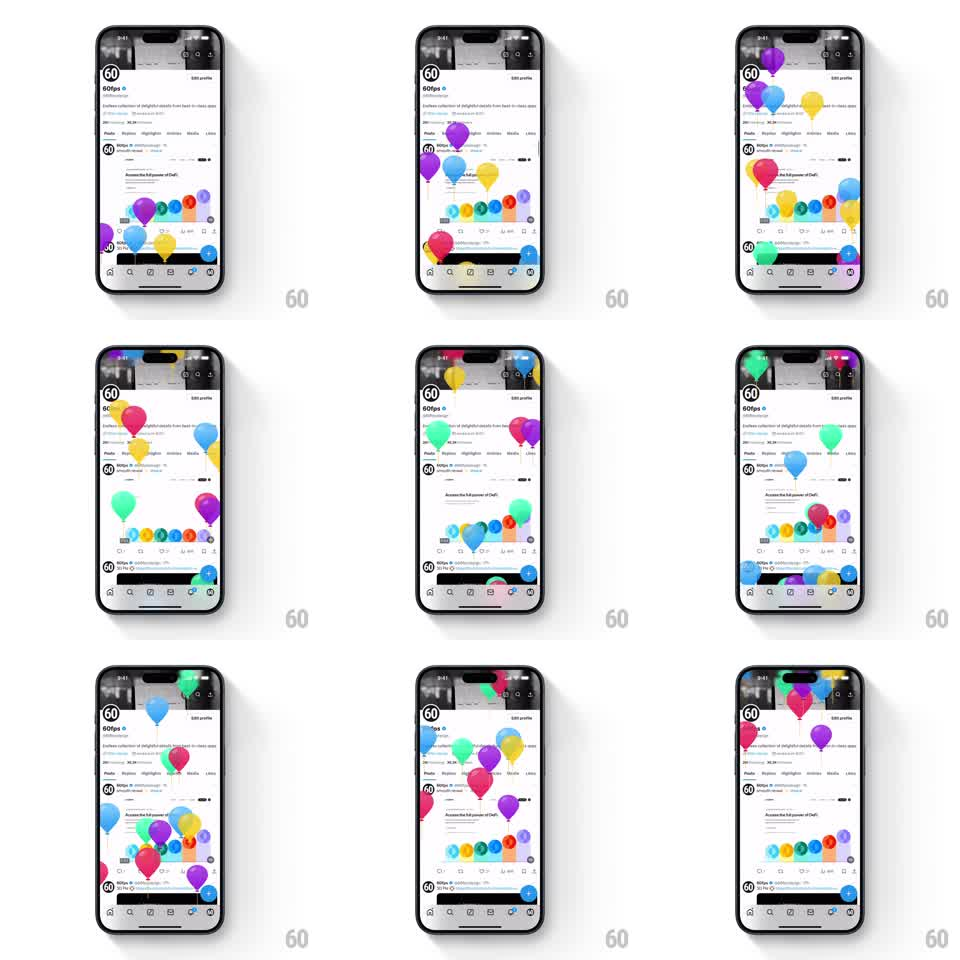

Media
Frame-by-frame

Rebuild this animation 1:1: X's 2025 celebration easter egg - swiping through profile tabs sends colorful balloons floating up from the bottom of the screen over the live profile page.

Rebuild this animation 1:1: X's 2025 celebration easter egg - swiping through profile tabs sends colorful balloons floating up from the bottom of the screen over the live profile page. ## Integration Integration: stack-agnostic spec - springs given as stiffness/damping, timed motions as duration + curve; map every value to your framework and animation library of choice. ## Scene An X profile page (header photo, avatar, bio, tab bar with Posts/Replies/Highlights, pinned post with a row of small colorful dots) stays fully interactive while large balloons - purple, blue, pink, yellow, green, teal - rise from below the screen. ## Motion spec Pattern: rising balloon particle layer, ~4s per balloon. - On the tab swipe, balloons spawn from below the bottom edge at random x positions, 6 to 10 at once with 100ms spawn stagger. - Each balloon rises straight up (3.5 to 5s, ease-out) with a gentle horizontal sway (+-15px sine, ~2s period, random phase) and a slight tilt rocking (+-6deg). - Balloons vary in size (0.7 to 1.3 scale) and opacity (0.8 to 1) for depth; smaller ones drift slower. - Each balloon fades out as it crosses the top edge (last 300ms) and is removed; no balloon wraps or re-enters. - The profile beneath stays scrollable and sharp - balloons pass over it as an overlay layer. ## Calibration - The sway is gentle and continuous; jerky direction changes break the helium feel. - Spawn density peaks at the trigger then thins - it is a burst, not weather. ## Reduced motion Balloons fade in and out near the bottom without traveling. ## Don't miss - Balloons are flat and glossy with a small highlight - no strings needed, but the shape must read instantly as a balloon. - They rise in front of the tab bar and header, but behind no UI element - it is a celebration laid over the app.